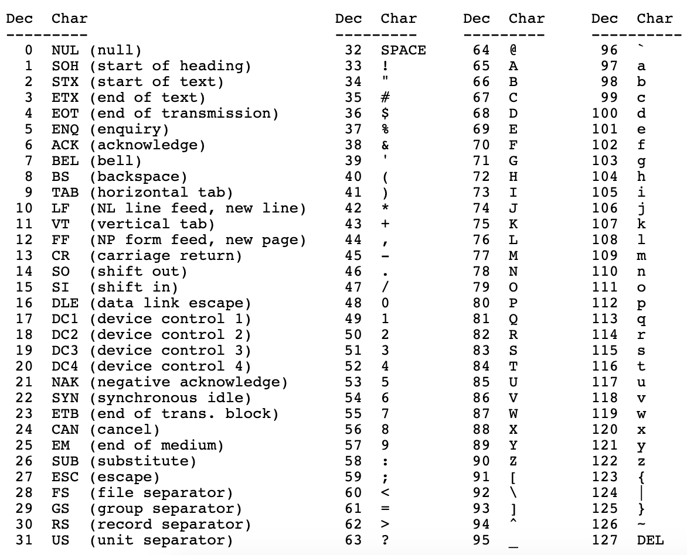

How to Convert a Letter to Upper Case
Let’s talk about a very simple string utility function that we use a lot. If somebody asks you to convert all letters in a string to upper case, what do you do? Yes, you use a built-in function that exists in all programming languages. For example, in JavaScript, we use String.prototype.toUpperCase function.
But have you ever thought how would yo do it if there is not a built-in function? If no, then this article is for you. The solution to this problem is very very very easy, actually. We just never think about it.
The key is ASCII table. If you don’t know what is this, it is simply a table that shows numerical representation of each character. Remember? Computers can only understand numbers. ASCII stands for American Standard Code for Information Interchange and it contains only 128 characters.

Now, look at the table carefully. The lower case letters starts from 97 and ends at 122 and upper case letters starts from 65 and ends at 90. So, if you are implementing your own toUpperCase function then all you need to do is subtract 32 from the char code whenever you see a lower case letter.
I know that, now you can write a function on yourself but here is my implementation of toUpperCase function in JavaScript.
function toUpperCase(str) { |
I hope this article was useful for you.
Thanks for reading!